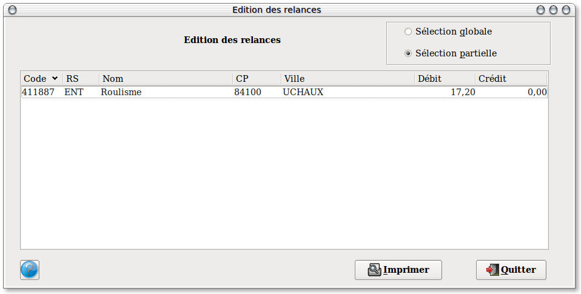
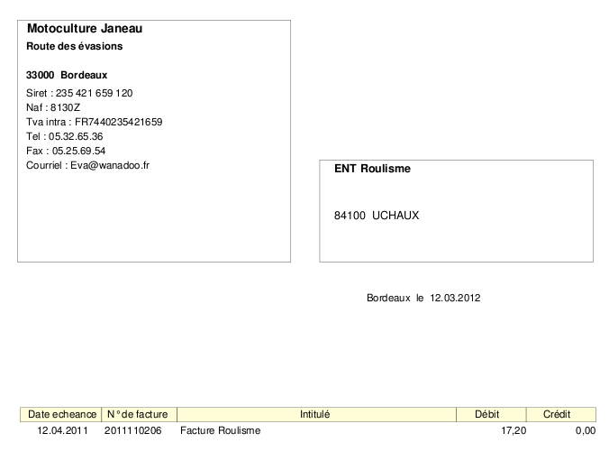

~ Comptabilité Laurux ~

~ Comptabilité Laurux ~ |
|
|
|

Dans cet écran vous retrouverez tous les comptes préparés lors de la premiere phase.
A cet endroit vous pouvez encore faire une sélection puisqu'en effet vous pouvez soit imprimer l'ensemble des comptes ( bouton "Selection globale")soit n'en imprimer que certains ("Selection partielle").
A la fin de votre selection cliquez sur le bouton "Imprimer" pour lancer l'edition selon le modele ci-dessous.

----------------------------------------------------------------------------------------------------------------------